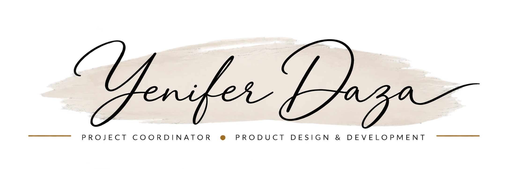

Based in Canada Open to opportunities

I coordinate work from requirements to delivery — turning needs into plans, aligning stakeholders, suppliers and priorities, and moving projects through execution, completion and improvement.
Hands-on professional experience across product development, design, production and operations.
Project coordination applied across products, operations, processes and business growth.
Project
Coordination
Cross-functional coordination
-
Product Development
Multiple product lines coordinated from design intent to fabrication
What I did Researched a compact-housing market and set the product direction that came out of it, then developed a multi-line furniture catalogue to one standard — 3D models, renders, manuals, packaging and fabrication drawings — and trained a junior designer who took over its highest-volume element.
Outcome A catalogue kept in production and documented to one standard, with the handover holding after I relocated and continued coordinating remotely.
View case -
Project Coordination
A custom fit-out service line, built from nothing and then run across 38 client projects
What I did Set the service up, then coordinated each project from site measurement through design and supplier and installer scheduling to installed handover.
Outcome Thirty-eight client projects delivered, with a photographic record of installed work.
View case -
Process Improvement
A footwear manufacturer’s product redesigned for direct injection
What I did Redesigned product and patterns for direct-injection construction, wrote the technical and process specifications, trained the production teams on them, ran pilot lots into series production, and developed a new women’s safety-footwear line.
Outcome Specifications in force carrying version numbers and effective dates, a new product line developed, and stage-by-stage non-conformance control operating on the floor.
View case -
Business & Market Development
Brands taken from product idea to manufacture
What I did Contracted directly by brand owners to run product development and process support: requirements, sourcing, costed consumption, prototypes, delivery scheduling and pilot runs.
Outcome Products manufactured and shipped to schedule.
View case -
Operations & Supply
Material supply for a made-to-order workshop
What I did Ran material ordering and supplier coordination end to end for thirteen consecutive months, and produced the cutting specifications and the optimisation in-house.
Outcome Thirteen consecutive months documented without a gap, and the function left as artifacts — a supplier database, a labelling system and a process model.
View project -
Costing & Pricing
One manufacturing cost, five channel prices
What I did Built the cost models behind the product range and the pricing structure that carried a single manufacturing cost into each sales channel.
Outcome A costing and pricing structure applied across the range — the same work I had done six years earlier in footwear.
View project -
Process Design
Core processes modelled, standardised and given a way to be measured
What I did Modelled the order, inventory and production processes, wrote version-controlled standard procedures for fabrication, box making and packing, and proposed a defects-per-unit inspection format.
Outcome Version-controlled procedures in use across the workshop.
-
Channel Development
From a single sales route to several, including a B2B channel developed from scratch
What I did Opened and coordinated additional sales channels and built the pricing scenarios behind each one.
Outcome Multiple channels operating in parallel.
View project -
Technical Product Design
A tactical boot carried from colourway to production pattern
What I did Developed the model and its colourways, drew the production patterns with per-piece cut quantities, and measured production times against costing assumptions.
Outcome The product was manufactured and branded.
-
Early-stage Development
A geodesic dome taken through early-stage development
What I did Worked the concept, its geometry and its construction logic.
Outcome Early-stage development. Not commercialised.
-
Data & Reporting
Sales and operations data turned into something a decision could be made from
What I did Tracked and analysed sales, inventory, fabrication and cash data, and prepared the figures behind ordering, range and channel decisions.
Outcome Inventory, promotion and phase-out decisions taken against a consistent set of figures.


Understand, plan, coordinate, execute, improve.
A hands-on approach to moving work from requirements through execution, delivery and continuous improvement.
-
01
Understand
Clarify the need, context, requirements and desired outcome.
-
02
Plan
Translate requirements into priorities, activities, resources, timelines and deliverables.
-
03
Coordinate
Connect people, information, suppliers and dependencies to keep work moving.
-
04
Execute
Support implementation, solve issues and move work through delivery.
-
05
Improve
Evaluate outcomes, identify opportunities and improve the process for future execution.
Not always linear — insights from Improve feed the next cycle of Understand and Plan.
Coordination is the thread through all of it.

Languages English Spanish
My experience has always lived at the intersection of ideas and execution. I've developed products, coordinated projects, worked with suppliers and production teams, built new ways of working, and helped turn customer and business needs into something that could actually be delivered.
That experience comes from building my own business, consulting for others, and working in operations — different environments that taught me how to organize work, solve problems and collaborate with people with very different priorities.
Now in Canada, I'm building the next stage of my career through coordinator-level roles where I can contribute that experience, keep learning, and grow within a new professional market.
- 38 Client fit-out projects delivered
Tools
-
Project Coordination & Collaboration
Asana · Monday.com · Miro
Project planning · documentation · stakeholder coordination · Agile/Scrum fundamentals
-
Analysis & Reporting
Excel (Advanced) · PowerPoint (Advanced)
Data analysis · reporting · dashboards · performance tracking
-
Design & Visualization
Rhino (Advanced) · V-Ray · AutoCAD · SketchUp · Illustrator (Advanced) · Photoshop
3D modeling · technical documentation · design development · visual communication
-
AI & Productivity
Generative AI tools
Research · information synthesis · workflow development · documentation
Let's talk about the role you are filling.
If you are hiring for project coordination, product development, operations or process improvement, I would be glad to walk you through the evidence behind any of these projects.
hello@yeniferdaza.com- linkedin.com/in/yeniferdaza
- Location
- Canada
- CV
- Available on request
- Availability
- Open to opportunities